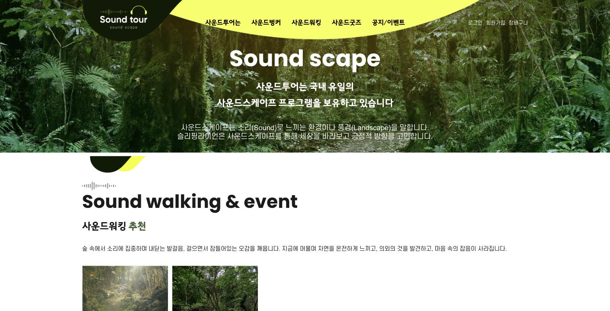
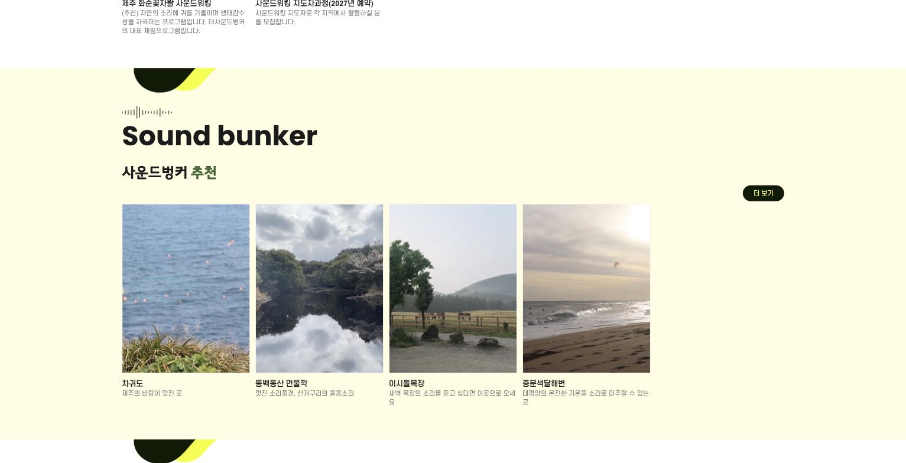

Online Channel Review & Proposal
공개된 채널을 살펴보며 저희가 캐치한 것들과,
함께 개선해볼 수 있는 방법을 정리한 제안서입니다.
Intro
안녕하세요, 이용원 대표님. 제주에서 영상과 브랜드를 만드는 스튜디오, 비디오 로스터리입니다.
5월에 화순리에 문을 연 '사운드벙커 제주' 소식을 기사로 접했습니다. 소리를 기록하고 보존하는 공간, 귀로 걷는 제주 — 저희처럼 제주에서 콘텐츠를 만드는 사람에게는 정말 반갑고 귀한 시도라고 느꼈습니다.
그래서 저희가 할 수 있는 방식으로 응원을 드리고 싶었습니다. 더사운드벙커의 홈페이지와 온라인 채널을 공개된 범위 안에서 찬찬히 살펴보았고, 그 과정에서 저희 눈에 캐치된 것들이 있었습니다. 아깝다고 느낀 지점들입니다.
불편하지 않으시다면 — 그 관찰과, 저희가 생각한 개선 방향, 그리고 함께한다면 어떤 계획으로 도울 수 있는지를 이 문서에 정리해 보았습니다. 뒤쪽에는 단계별 실행 계획도 사업계획서 형태로 담았습니다.
영업 문서라기보다, 저희가 먼저 일해본 결과물입니다. 받아만 보셔도 괜찮고, 유효하다고 느끼시는 부분이 있다면 그때 편하게 말 걸어주세요.
— 비디오 로스터리 드림
01 · What We Noticed
히어로가 "Sound scape" 개념 설명 텍스트와 정적 숲 사진으로 시작합니다. 사운드스케이프가 낯선 방문자는 글로 개념을 이해해야 하는데, 이 회사의 상품은 글이 아니라 '경험'입니다. 첫 3초 안에 귀가 열리지 않으면, 스크롤은 이어지지 않습니다.
첫 화면에 15초 무빙 히어로 영상(곶자왈 발걸음·바람·새소리 현장음) + "지금, 소리를 켜보세요 🔊" 버튼. 개념 설명은 영상 아래로.

soundtour.net 첫 화면 — 실제 화면 캡처 (2026. 07)
01 · What We Noticed
차귀도·동백동산·이시돌목장·중문색달해변 — "새벽 목장의 소리를 듣고 싶다면"이라는 카피가 붙어 있는데, 정작 들을 방법이 없습니다. 가장 아까운 지점이라고 느꼈습니다.
각 명소 카드에 15~20초 사운드 클립(영상+현장음) 임베드. 그 자체가 아카이브의 미리듣기이자, 방문 욕구를 만드는 장치가 됩니다.

Sound bunker 섹션 — "새벽 목장의 소리를 듣고 싶다면"이라는 카피가 있지만, 들을 수 있는 장치는 없습니다. 실제 화면 캡처 (2026. 07)
새로 연 오프라인 공간이 지금 가장 알려야 할 상품인데, 상단 메뉴·히어로에서 예약으로 가는 길이 한눈에 잡히지 않습니다.
히어로에 고정 CTA "사운드벙커 제주 예약하기" 1개. 개관 프리미엄이 있는 지금이 동선을 세울 타이밍입니다.
01 · What We Noticed
사운드스케이프 체험 키트(250,000원)·사운드워킹 키트(496,100원)는 고관여 가격대입니다. 이 가격을 설득하는 건 텍스트가 아니라 '사용하는 장면'인데, 상품 영상이 보이지 않았습니다(공개 페이지 기준 관찰).
키트별 30~40초 사용 영상(개봉→착용→숲에서 듣는 순간). 고단가 상품일수록 영상 증거가 전환을 만듭니다.
5월 개관 때 뉴시스·서울신문·한라일보 등 9개 이상 매체가 보도했습니다 — 컨셉의 뉴스 가치는 증명됐습니다. 다만 그 이후 브랜드 자체 콘텐츠·방문 후기가 검색을 이어받지 못하고 있어, 지금 검색하는 여행자는 두 달 전 기사만 만나게 됩니다.
릴스·쇼츠 정기 발행이 검색·추천 피드를 다시 채웁니다. 기사는 아카이브로, 방문 결정은 릴스로 이뤄집니다.
요즘 여행자는 릴스를 저장하며 목적지를 정합니다. 소리 중심 콘텐츠는 "소리를 켜세요" 훅으로 사운드 온 시청을 유도할 수 있는, 릴스 알고리즘과 정합이 특히 좋은 소재인데 — 활동 흔적이 검색에서 잘 잡히지 않았습니다.
'귀로 걷는 제주' 릴스 시리즈로 채널의 뼈대를 세우고, 사운드벙커 방문 릴스(카드 터치 순간)로 예약을 연결.
02 · Summary
이미 갖추신 것
국내 유일 포지션. 사운드스케이프 프로그램·사운드워킹·지도자과정, 그리고 제주도·제주관광공사와 함께 연 공공 협업 공간까지. 콘셉트와 신뢰는 이미 앞서 있습니다.
이미 갖추신 것
뉴스 가치 증명. 개관 보도 9개 매체+. 스토리 자체의 힘은 검증이 끝났습니다.
비어 있는 것
'들리는' 접점. 홈페이지·검색·SNS 어디에서도 방문 전에 소리를 경험할 수 없습니다.
비어 있는 것
개관 이후의 동력. 기사 파도를 이어받을 자체 콘텐츠 채널이 아직 서 있지 않습니다.
저희가 느낀 한 문장
기사는 개관을 알렸지만, 여행자가 "가보고 싶다"고 느끼는 건 기사가 아니라 릴스입니다. 그 릴스를 지금 세우면, 개관 프리미엄이 지속 유입으로 바뀝니다.
03 · Action Plan
부담 없는 것부터 시작해, 효과를 확인하며 넓히는 구조로 잡았습니다. 어느 단계에서든 멈추셔도 됩니다.
보유하신 사진·아카이브 음원만으로: ①홈페이지 히어로용 15초 무빙 영상 1편 ②명소 사운드 클립 2편. 촬영 일정 없이, 지금 있는 자산으로 '들리는 첫 화면'을 먼저 세웁니다.
현장 촬영·수음 포함: ①릴스 4편(곶자왈 바람 · 파도와 몽돌 · 목장의 새벽 · 사운드벙커 카드 터치 순간) ②사운드벙커 제주 공간 필름 60초 1편(기관 보고·전시·홈페이지 상석용). 드론 항공 컷으로 '소리의 장소' 스케일 표현.
월 릴스 3~4편 정기 발행 + 키트 상품 영상 + 홈페이지 예약 동선·영상 임베드 정비. 검색과 추천 피드가 '두 달 전 기사'가 아니라 '이번 주 콘텐츠'를 만나게 합니다.
03 · Action Plan
| 단계 | 산출물 | 기대 효과 | 예산(안) |
|---|---|---|---|
| S1 가볍게 | 히어로 영상 1 + 사운드 클립 2 | 첫 화면에서 '들리는' 경험 · 체류·스크롤 개선 | 30만원대 |
| S2 본격 | 릴스 4 + 공간 필름 1(촬영·수음·항공) | 지속 유입 채널 가동 · 예약 전환 연결 · 기관 보고 자산 | 백만원대 초반~ (맞춤 견적) |
| S3 운영 | 월 3~4편 + 상품영상 + 사이트 정비 | 검색·피드 상시 노출 · 계절 콘텐츠 축적 | 월 단위 협의 |
예산은 구성에 따라 조정됩니다. 정확한 금액은 30분 통화에서 범위를 확인한 뒤 견적서로 드립니다.
참고 · 저희가 도울 수 있는 전체 영역
| 영상 | 브랜드 필름 · 릴스/숏폼 · 드론 항공 · 촬영 없이 AI 숏폼 |
| 웹 | 홈페이지 첫 화면·예약 동선 정비 · 영상 임베드 · 문의 자동화 |
| 분석 | 시장·경쟁 분석 리포트(이 문서의 확장판) · 영문/다국어 콘텐츠 |
필요한 것만 골라 진행합니다 — 전부를 권하지 않습니다.
04 · Closing
여기까지 읽어주셔서 감사합니다. 이 문서는 저희가 더사운드벙커의 공개 채널만 보고 만든 것이라, 내부 사정과 다른 부분이 있을 수 있습니다. 그 부분은 너그럽게 봐주시면 좋겠습니다.
다만 한 가지는 자신 있게 말씀드릴 수 있습니다 — '귀로 걷는 제주'라는 이야기는, 영상과 소리로 보여주는 순간 훨씬 멀리 갑니다. 그 일을 제주 안에서 가장 가까이서, 가장 빠르게 도울 수 있는 팀이 저희라고 생각합니다.
유효하다고 느끼신 부분이 하나라도 있다면, 30분 통화(무료)로 구체적인 구성을 설명드리겠습니다. 물론 이 문서의 개선 방향은 저희 없이 직접 실행하셔도 됩니다 — 그래도 저희는 기쁩니다.
Contact
Video Roastery
제주 영상·브랜드 스튜디오 · 4개국어 사이트 운영
videoroastery.com
kiwee1223@gmail.com
본 제안서는 공개 정보만으로 작성한 무료 문서이며, 과장 없이 실제 관찰만 담았습니다. 내부 데이터가 필요한 판단(전환율 등)은 포함하지 않았습니다.